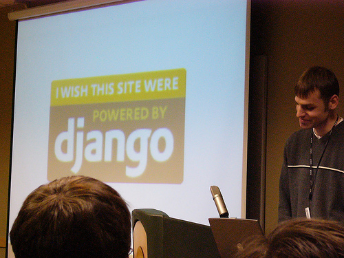

Snakes Still Snakes, Rubies Still Rubies #

Well, it sounds like the Python kids made a good showing at the Snakes and Rubies event this weekend. There’s quite a stack of links out there mulling through the event. The audience seems to think it was a very close match. Doesn’t sound like anyone walked away too altered. Here’s a favorite moment, though, from Rob Lambert:
Question from the Website: What is Web 2.0? Audience and panelists just sighed, ughhhhhhhh.
Hehe! I find such unity in the group groan. Anyway, the good snarky fun in the picture above is from all these.
aberant
wow.. a pic of me and the back of DHH ’s head.. i guess i’m famous now! personally, i was REALLY impressed with django, which seems perfect for the times you want a website, and not so much a web-app. Also, everyone got a good laugh from your question, why.
kode
shouldn’t it be ‘was’? as in “I wish this website was powered by Whatever”?
grammar_man
Nope, should be ‘were’. It’s conditional, not past tense, although since ‘were’ is also past-tense-plural, they often get confused.
Tesseract
For those who weren’t there, what was _why’s question?
aberant
Tesseract: it’s as follows:
Looking a bit beyond web frameworks, how do you envision the world coming to an end?
Posted by why the lucky stiff on 11.26.2005
kode
hmm, maybe I could’ve bothered earlier to ask about this catalyst thing where you supposedly have to sell your soul and code perl if you want to use it, and how it stacks up to ruby on rails and django
Adrian Holovaty
“I wish this site were” is correct. We in the Django community are perfectionists and aspiring grammarians. :)
Adharma
“Were” is correct, the subjunctive mood is not subjective.
<|:{
It’s good to see that the language wars are still going strong.
haiku summary
a cold winter kills
snake of indentation dies
Ruby lives by code block skill
haiku summary II
oops… it’s supposed to be 5-7-5:
a cold winter kills
snake of indentation dies
Ruby lives by block
Comments are closed for this entry.